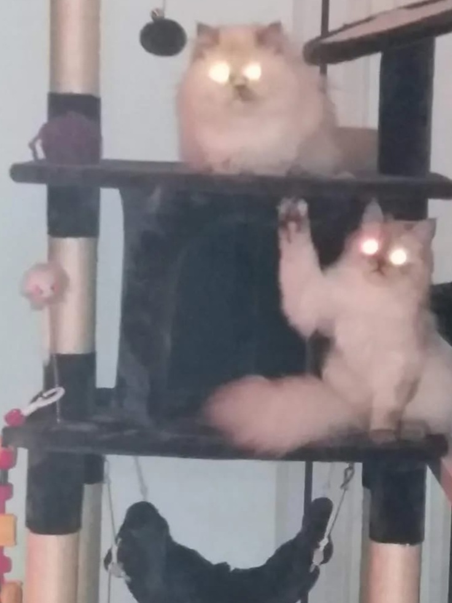
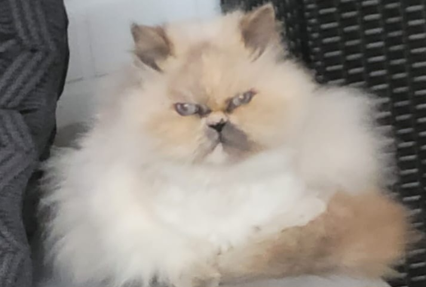
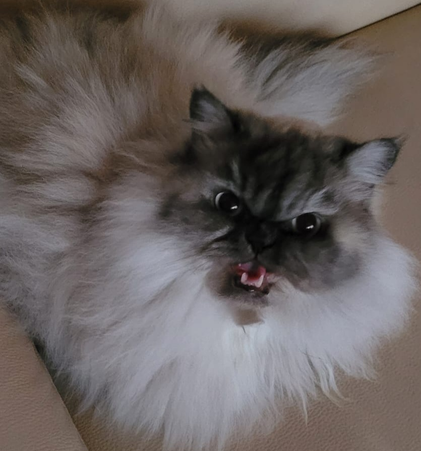

Our charming Persian cats: Tinckerbell and Elsa
Tinckerbell and Elsa
- Both cats are integral members of the family and contribute to the atmosphere of the household in their own way.
Tinckerbell provides cuddle sessions and attention, while Elsa offers calm, gentle moments

Tinckerbell – The Spoiled Cuddle Princess
-
Tinckerbell is our 10-year-old Persian cat who, despite her occasionally sassy demeanor, has a great passion for cuddles.
Her gentle nature and deep eyes are a true delight, and she knows exactly how to be the center of attention.

Elsa – The Shy but Loving Cat
-
Elsa, our 6-year-old Persian cat, is very reserved and takes some time to open up. However, once she gains trust,
she loves being petted by our family members. Her shy nature makes the moments of trust particularly precious.
